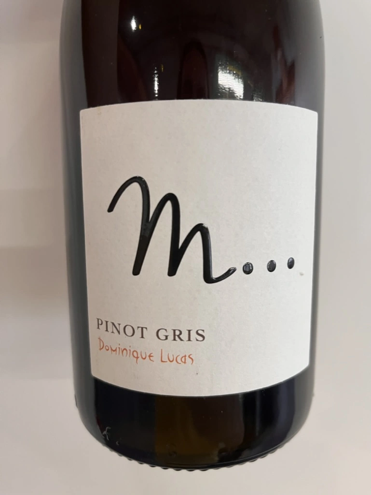

- Type
- White Still, Dry
- Producer
- Les Vignes De Paradis
- Vintage
- 2019
- Location
- France, Vin Des Allobroges IGP
- Grapes
- Pinot Gris
- Alcohol
- 13
- Sugar
- 0.25
- Price
- 765 UAH
- Cellar
- 1 bottle
Producer
Dominique Lucas is a 5th generation winemaker who migrated from his native Burgundy, frustrated with the region’s reliance on chemicals. He is focused on making Chasselas in the Savoie that stands with the best white wines of France. Les Vignes de Paradis is located on the shores of Lake Geneva (Lac Leman).
His vines are separated into 27 parcels of different soil composition. All are harvested by hand. Most of them are Chasselas, but he also has tiny parcels of Savagnin, Pinot Gris, Gamay, Chardonnay and Chenin Blanc. These are not old vines, but in the right hands…
Ratings
There are no ratings of this wine yet. It’s waiting for the right moment, which could be today, tomorrow or even in a year. Or maybe, I am drinking it at this moment… So stay tuned!